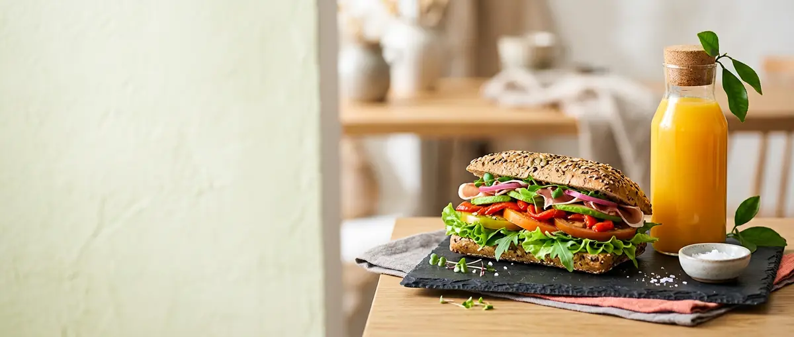

Se åbningstider nederst
Frisklavet. Gennemtænkt.
SandwichPastaSMÖR
Sandwich, pasta, smørrebrød og friskpresset juice – lavet fra bunden i Åbyhøj. Med erfaring fra Noma og Jordnær, lige til hverdagen og lige til at tage med.
Frisk fisk hver morgen
Fiskehuset leverer fiskefilet til os hver dag, så fiskefilleten altid er dagsfrisk.
Erfaring fra Noma og Jordnær
Vores signaturdressinger og mayo er udviklet med dybde, balance og umami fra det gastronomiske køkken.
Du bestemmer kombinationen
Byg selv din sandwich og pasta: brød, dressing, grønt og toppings – vi samler den frisk til dig.
Moderne delikatesse og frisklavet takeaway
Hos KOLD forener vi stolte madtraditioner med moderne gastronomi. Med erfaring fra bl.a. Noma og Jordnær skaber vi frisklavede sandwiches, pasta, nytænkte smørrebrød og friskpressede juicer.
Vores signaturdressinger er inspireret af vores erfaring fra Michelin-køkkenet, hvor vi arbejder med dybde, balance og umami.
Vi tror på gode råvarer, gennemtænkte smage og kvalitet i hver eneste detalje. Lige til hverdagen. Lige til at tage med. Altid med KOLDs kærlighed til smag.
Catering & frokost til virksomheder
Gør frokostpausen til noget, man glæder sig til.
Vi laver frisklavede frokostløsninger og catering til virksomheder – med fokus på gode råvarer, gennemtænkte smage og variation. Fra sandwiches og SMÖR til salater, pasta og snacks sammensætter vi løsninger, der passer til jeres hverdag, møder og arrangementer.
Fortæl os lidt om jer, så vender vi tilbage med et forslag. Eller kom forbi og sig hej – så garanterer vi et godt samarbejde.

Tak – vi har fået jeres forespørgsel
Find os i Åbyhøj
Henrik Hertz Vej 74, 8230 ÅbyhøjÅbningstider
Åbningstider
Åbningstiderne kommer snart. Skriv til os, hvis du vil vide mere.